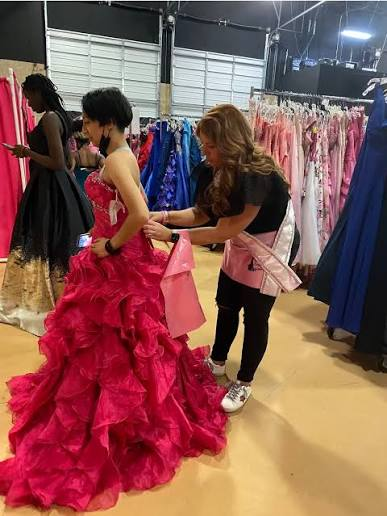
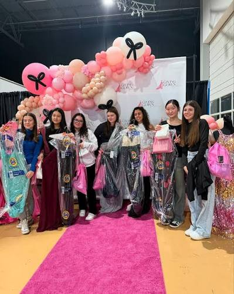
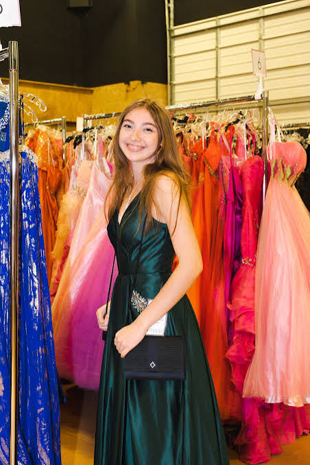
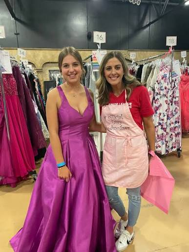
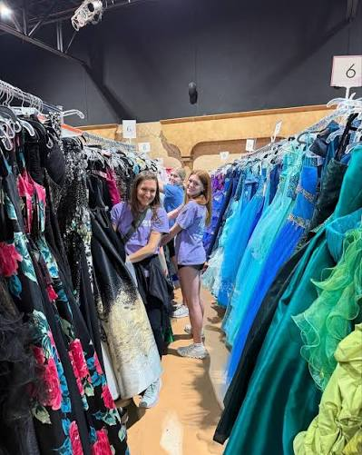
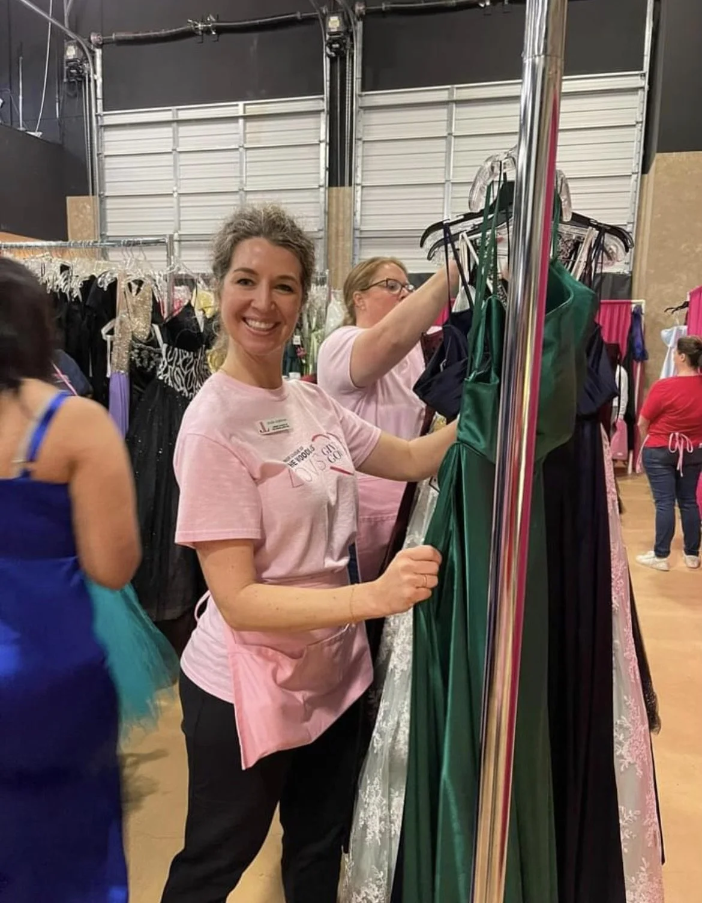
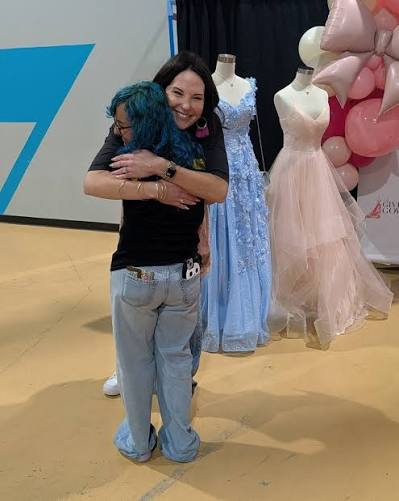

founder & president, May 2023 – present
Where every girl gets her moment.
A student-run nonprofit that puts formal wear on students across St. Johns County who wouldn't otherwise have a dress or suit for prom, homecoming, or a formal interview — at zero cost to them.
Giving Gowns collects, sorts, and redistributes formal wear — gowns, suits, accessories — to students across St. Johns County heading into prom, homecoming, or their first interview. I founded it in May 2023 and have run it since, alongside a fifty-person volunteer team.
Every piece moves through the organization at zero cost to the student who receives it. That's by design, not by accident.
I manage the budgeting, fundraising, and financial reporting for the org, negotiate the corporate partnerships that keep inventory coming in, and built the supply chain that gets a gown from a donor's closet to a student's closet without either side paying for the trip.
It's the same set of skills I use everywhere else on this site — just pointed at a different problem.
Distribution day — racks, fittings, and the moments in between.






